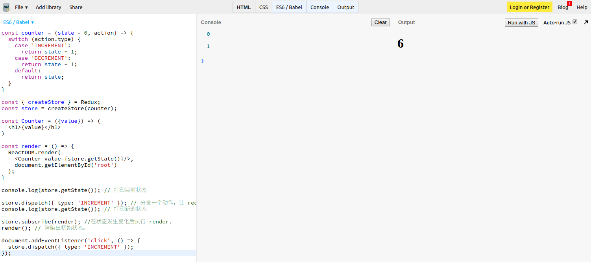
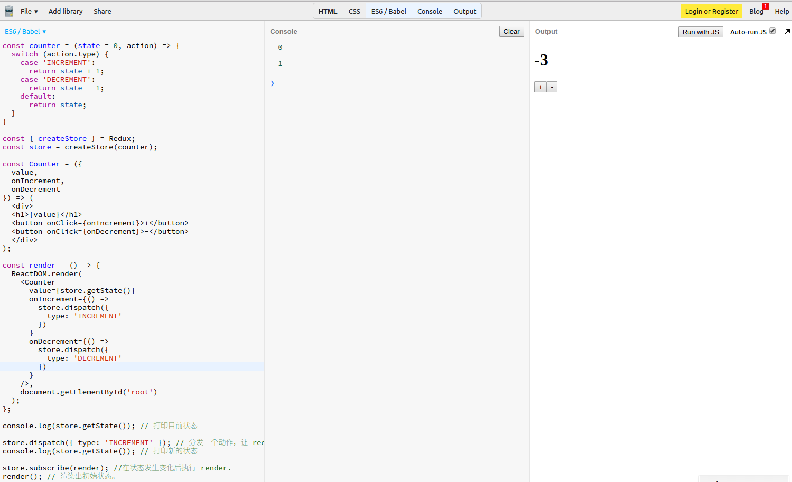

本节使用到的环境：https://jsbin.com/nepobom/edit?js,console,output
环境
- 包含我们上一次写的计数器应用.
- 引入了 React, React-DOM 库。
我们使用 UMD 版本的 React 和 React-DOM，会将 React, ReactDOM 作为全局变量。
使用 React
React 是一个视图层框架。如果你没有接触过 React, 你可以前往 http://sike.io/react 学习。
让我们来把 render 方法用 React 改写:
const render = () => {
ReactDOM.render(
<Counter value={store.getState()} />,
document.getElementById('root')
);
}我们不再把数字直接渲染到页面里，而是渲染一个 Counter 组件，这个组件接受应用当前状态作为 value 属性。
const Counter = ({value}) => (
<h1>{value}</h1>
)我们只需要直接将传进入的数值用最大的标题渲染出来。
现在应用应该也可以正常执行。

现在我想为计数器加上两个按钮，分别用于自增和自减。而不是单纯地增加。
const Counter = ({
value,
onIncrement,
onDecrement
}) => (
<div>
<h1>{value}</h1>
<button onClick={onIncrement}>+</button>
<button onClick={onDecrement}>-</button>
</div>
);
const render = () => {
ReactDOM.render(
<Counter
value={store.getState()}
onIncrement={() =>
store.dispatch({
type: 'INCREMENT'
})
}
onDecrement={() =>
store.dispatch({
type: 'DECREMENT'
})
}
/>,
document.getElementById('root')
);
};通过添加 onClick 事件并在里面分发动作，我们可以做到改变应用目前的状态。
还要记得把最下面的页面点击事件去掉～

总结
在 React 中，很容易使用 Redux.
- 通过给视图添加分发动作的事件来改变状态
- 通过订阅渲染函数让每次状态改变触发渲染
思考： （答案将在下一节公布）
- 为什么我们不在
Counter组件里面直接获取当前状态？
上节解答:
- 如果不在
subscribe方法返回退订函数，可能会有什么麻烦？ 不提供退订功能可能出现的情况：当订阅者引用了一个后来被移除的页面元素时，由于每次状态变化都会调用所有订阅者，这时订阅者会试图获取一个不存在的元素并进行操作而出现错误。
即使你很谨慎，不让订阅者出现引用错误，订阅者的数量一直在增加，也可能导致应用反应缓慢。
如果为 store 提供一个额外的 unsubscribe 函数：你需要合适地标记订阅者，导致逻辑变得复杂。